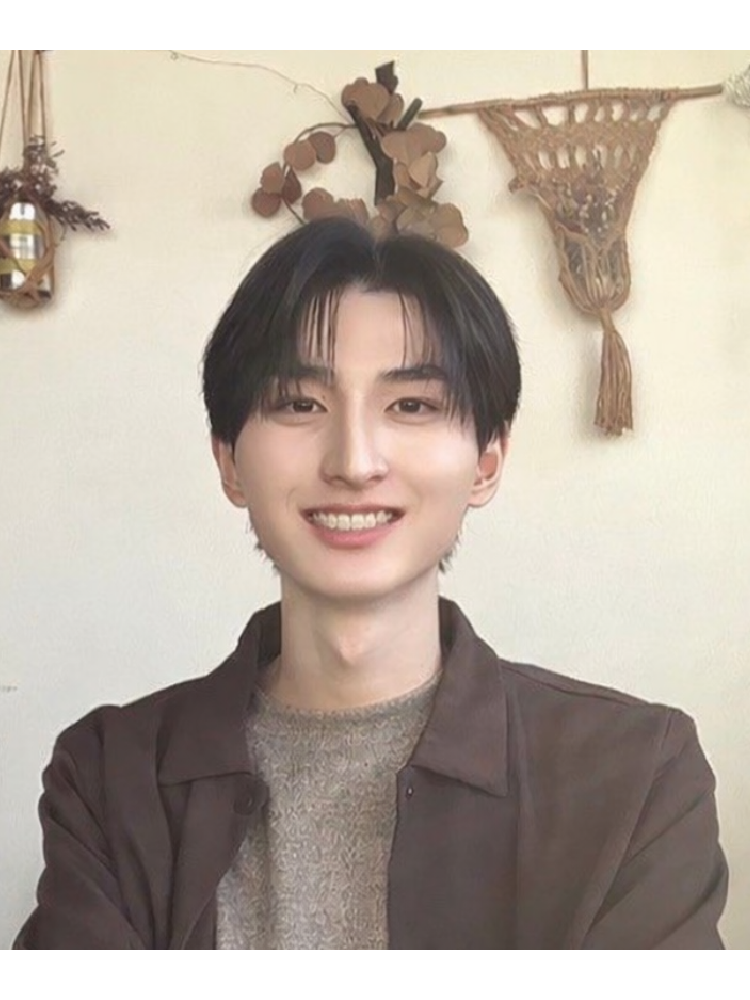

施術士紹介

僕がボディートークに出会ったきっかけは、
家で一緒に暮らしている猫たちです。
猫たちがボディートークを受け、
不調が改善していく姿を見て、
「これを自分もできるようになりたい」
そう思ったことが、すべての始まりです。
そこからボディートークの学びを深め、
今は施術士として活動しています。
⸻⸻⸻⸻⸻⸻⸻⸻⸻⸻⸻⸻⸻
なんとなく不調が続く。
検査では異常がないと言われた。
ちゃんと休んでいるのに、回復しない。
そんなとき、体は「壊れている」のではなく、
何かを伝えようとしていることがあります。
⸻⸻⸻⸻⸻⸻⸻⸻⸻⸻⸻⸻⸻
僕のセッションでは、
今の体が「なぜその反応を選んでいるのか」を、
一緒に読み解いていきます。
肉体・感情・意識は切り離せないものです。
身体と対話しながら、
体の声を通訳するような時間にします。
「ちゃんと理由があったんだ」
そう感じてもらえることを、何より大切にしています。
⸻⸻⸻⸻⸻⸻⸻⸻⸻⸻⸻⸻⸻
僕は、症状を消すことをゴールにしていません。
体がなぜ、その反応を選んでいるのか。
そこが理解され、
必要な調整が起きた結果として、
症状が改善していくことはとても多いです。
施術で大切にしていること
・体の反応を間違いとして扱わないこと
・変化を急がせず、その方のペースを尊重すること
・その方に、体に、教えてもらうという姿勢でいること
施術者自身もセッションをしてみないと、どんな内容が出てくるか分かりません。
体を調べ、結果をお教えするのではなく、
分からないから体やその方に教えてもらい、結果をお伝えする、
というスタンスを大切にしています。